Victoria Memorial
Marble monument, gardens and museum documenting Kolkata’s colonial past.
Kolkata blends colonial-era architecture, historic neighbourhoods, traditional sweets, street food and an active arts scene. The city feels both old-world and energetic, with yellow taxis, tram lines and wide river ghats.
Visitors come for Victoria Memorial, Howrah Bridge, coffee houses, book streets and cultural events. The city is also a gateway to the Sundarbans and Shantiniketan.
Marble monument, gardens and museum documenting Kolkata’s colonial past.
Iconic steel bridge with sunset views along the Hooghly River.
World’s largest second-hand book market and legendary adda spot.
Artist neighbourhood where Durga idols are sculpted.
Walk the gardens, explore the museum and enjoy open fields at Maidan.
Riverside views, ferry rides and atmospheric ghats along the Hooghly.
Browse bookshops and experience Kolkata’s historic intellectual hub.
City routes are simple and walk-friendly.
Short trip
Full experience
3–4 days
Central, full of restaurants and nightlife.
Best for first-time visitors.
Busy shopping hub with good transport connections.
Good for budget and mid-range stays.
Modern hotels, malls, cafes and wider roads.
Ideal for business trips or quieter stays.
 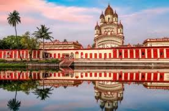
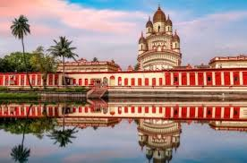
 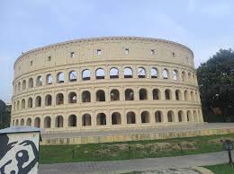
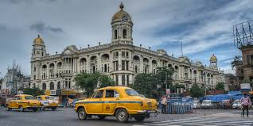
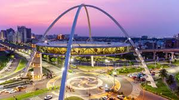
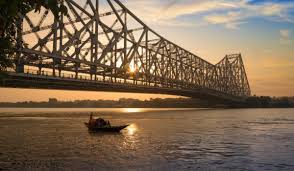
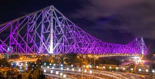
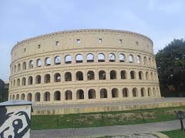
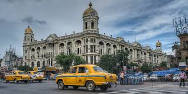
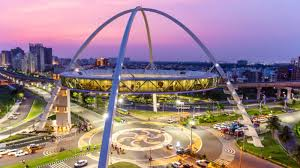
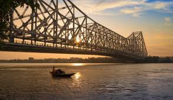
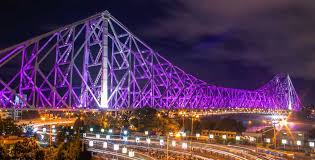
Food, transport and local habits.